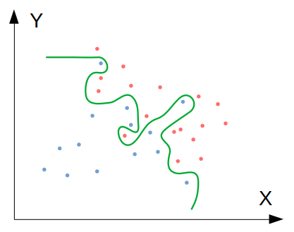
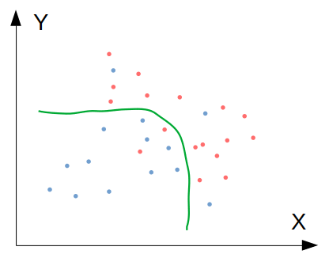
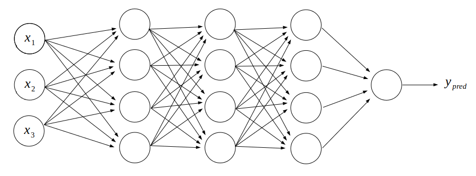
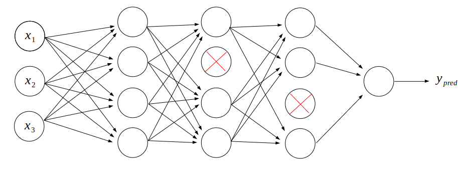
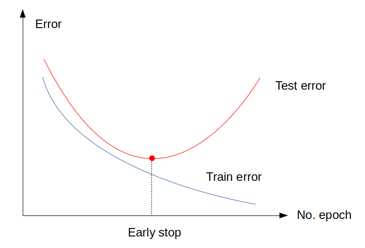

โดย ชิตพงษ์ กิตตินราดร | มกราคม 2563
Regularisation คือเทคนิคในการลดปัญหา Variance ของโมเดล นั่นก็คือการที่โมเดลถูกเทรนแล้วฟิตกับข้อมูลชุด Train set ได้ดี แต่พยากรณ์ไม่แม่นยำเมื่อนำไปใช้กับ Test set หรือข้อมูลจริงที่โมเดลไม่เคยเห็น บางทีเราเรียกปัญหานี้ว่า Generalisation error
ภาพด้านล่างนี้แสดงปัญหา Generalisation error ซึ่งเกิดขึ้นจากการที่โมเดลฟิต Parameter เข้ากับ Train set อย่างรัดกุมเกินไป จนกระทั่งไม่สามารถพยากรณ์ข้อมูลที่มองไม่เห็นได้อย่างเที่ยงตรงเท่าที่ควร

ซึ่งถ้าหากเราดำเนินการเพื่อลด Generalisation error ก็จะได้โมเดลที่มีความซับซ้อนน้อยลง ทำให้สามารถ Generalise ไปยังข้อมูลชุดใหม่ๆ ได้ดียิ่งขึ้น ดังภาพนี้:

เทคนิคการลด Generalisation error ที่จะนำเสนอ คือ regularisation, Dropout regularisation, และ Early stopping
แนวทางพื้นฐานในการแก้ปัญหา Generalisation error คือการเพิ่ม Regularisation term เข้าไปใน Cost function และในการอัปเดต Parameter เพื่อกดค่า ให้น้อยลง
ค่าของ Regularisation term นี้ จะแปรผันตามความซับซ้อนของโมเดล ด้วยการใช้ norm ของ เป็นพื้นฐาน
Cost function ที่รวม Regularisation term แล้ว มีสมการรูปทั่วไปดังนี้:
โดย คือ Frobenius norm ของ Matrix W คำนวนจากผลรวมของ ยกกำลังสองทุกตัวของทุก Layer ตั้งแต่ Hidden layer ไปจนถึง Output layer สามารถแทนเป็นสมการดังนี้:
โดย เป็น Matrix ขนาด คูณ
สิ่งที่ Regularisation term นี้ทำ ก็คือการกดดันให้ค่าน้ำหนัก มีค่าน้อยลง โดยการทำงานคู่กับการที่เราบวก เข้าไปในอนุพันธ์ของ ทำให้ มีค่ามากขึ้น ส่งผลให้ มีค่าน้อยลง ดังนี้:
โดยการลดลงของ นี้ จะแปรผันตามขนาดที่แท้จริงของ เราเรียกพฤติกรรมนี้ว่าการถดถอยน้ำหนัก หรือ Weight decay
สังเกตว่าการทำ regularisation นี้ เราต้องกำหนด Hyperparameter ที่ควบคุมว่า Regularisation term จะมีผลต่อการถดถอยของน้ำหนักเพียงใด
ใน TensorFlow เราสามารถทำ regularisation โดยการกำหนด Argument ใน Layer ดังนี้:
from keras import regularizers
model.add(Dense(64, input_dim=64,
kernel_regularizer=regularizers.l2(0.01)))
การ Regularise ด้วยวิธีนี้ เป็นวิธีทั่วไปที่ใช้ในสถิติและ Machine learning algorithm อื่นๆ อย่างไรก็ตาม เมื่อใช้กับ Deep neural network regularisation มีปัญหาอันหนึ่ง คือปรากฏการณ์ Co-adaptation กล่าวคือมันทำให้ค่าน้ำหนักที่มีค่ามาก ยิ่งขยายขนาด ส่วนค่าน้ำหนักที่มีค่าน้อย ยิ่งลดขนาด นั่นก็คือการขยายความต่างนั่นเอง ปรากฏการณ์นี้ทำให้เราไม่สามารถใช้ประโยชน์จากโมเดลที่มีความซับซ้อนมากขึ้นได้เต็มที่ เพราะเมื่อเราทำให้โมเดลซับซ้อนขึ้น ผลที่ได้กลับเป็นโมเดลที่เน้นสิ่งที่มีค่ามาก และกดสิ่งที่มีค่าน้อยลงอย่างเป็นระบบ ดังนั้นเราจึงมีวิธีการ Regularise พิเศษสำหรับ Neural network ที่เรียกว่า Dropout
หลักคิดของ Dropout นั้นเรียบง่ายมาก สมมุติเรามีโมเดลโครงสร้างดังนี้:

เราจะ "ปิด" Neuron บางตัวในระบบ ไม่ให้รับข้อมูลใดๆ ดังนั้น Neuron ที่ถูกปิดก็จะไม่ส่งข้อมูลออกไปยัง Neuron ตัวอื่นเช่นเดียวกัน ดังภาพนี้:

ในระบบนี้ แสดงการกำหนด Dropout เท่าเท่ากับ 0.25 บน Layer ที่ 2 และ 3 นั่นคือ ให้ปิด Neuron 25% ของ Layer ดังกล่าว
การ "ปิด" Neuron บางตัวในเครือข่ายแต่ละชั้น เป็นการเลือกปิดแบบสุ่ม ซึ่งฟังเผินๆ อาจจะดูเหมือนเป็นความคิดที่ไม่ดี แต่ในความจริงเทคนิคนี้ใช้งานได้ดี เพราะเราไม่ได้ไปปิด Input แต่ไปปิดหน่วยประมวลผลบางตัว การเลือกปิดแบบสุ่มนี้จะป้องกันการเกิด Co-adaptation และได้ผลในการลด Overfitting เพราะทำให้โมเดลนั้น "ง่าย" ลง แต่ไม่ได้จงใจกดข้อมูลลักษณะใดลักษณะหนึ่งลง เป็นการสุ่มกดเพื่อลดความซับซ้อนของทั้งระบบ
ในทางเทคนิค วิธีการทำ Dropout คือการสร้าง Boolean matrix มิติเท่ากับ Matrix ของ Activation ที่ต้องการใช้ Dropout โดยสุ่มค่า Yes/No ตามสัดส่วนที่เรากำหนด เช่น ถ้ากำหนดให้ปิด 25% ก็คือให้ทั้ง Matrix มีค่า True 75% ค่า False 25% จากนั้นนำ Dropout matrix นี้ไปคูณแบบ Element-wise เข้ากับ Activation matrix ก็จะได้ Activation matrix ใหม่ที่บาง Element มีค่าเท่ากับศูนย์ในตำแหน่งเดียวกับที่ใน Dropout matrix มีค่าเป็น False จากนั้นนำสัดส่วนการปิดไปหารแบบ Element-wise ออกจาก Activation matrix ใหม่ เพื่อทำการ Normalise
แสดงวิธีการทำ Dropout ใน iPython ได้ดังนี้:
In [1]: keep_prob = 0.75
In [2]: import numpy as np
In [3]: d = np.random.rand(3,4) < keep_prob
In [4]: d
Out[4]:
array([[False, True, True, True],
[ True, True, True, True],
[ True, False, True, True]])
In [5]: a = np.random.randn(3,4)
In [6]: a
Out[6]:
array([[-0.37998077, -0.96594641, 0.54147094, -0.35392546],
[-0.34891998, -0.53428796, -1.03811021, -2.36410892],
[-0.26496699, 0.21605195, -1.11321207, 0.53065364]])
In [7]: a_dropped = np.multiply(a,d)
In [8]: a_dropped
Out[8]:
array([[-0. , -0.96594641, 0.54147094, -0.35392546],
[-0.34891998, -0.53428796, -1.03811021, -2.36410892],
[-0.26496699, 0. , -1.11321207, 0.53065364]])
In [9]: a_dropped /= keep_prob
In [10]: a_dropped
Out[10]:
array([[-0. , -1.28792855, 0.72196126, -0.47190062],
[-0.46522664, -0.71238394, -1.38414694, -3.15214523],
[-0.35328932, 0. , -1.48428276, 0.70753819]])
ใน TensorFlow เราสามารถทำ Dropout ได้อย่างง่ายดาย โดยการเพิ่ม Dropout layer ลงไปก่อนหน้า Layer ที่เราต้องการทำ Dropout ดังนี้:
model.add(Dropout(0.25))
ในปัจจุบัน แนะนำให้ใช้ Dropout ก่อน สำหรับ Deep neural network
Early stopping คือการหยุดการเทรนก่อนที่ Optimiser จะ Converge หา Loss ที่ต่ำที่สุด โดยมีสมมุติฐานว่ายิ่งเทรนไป โมเดลจะยิ่งซับซ้อนขึ้น จนอาจจะเกินจากที่จะสามารถ Generalise ได้ดี
ลองดูภาพนี้ประกอบ:

จะเห็นว่า ตามปกติ Optimiser จะเทรนเพื่อให้ได้ Train error ต่ำที่สุด แต่บางครั้ง Test error จะเริ่มวกกลับไปมีค่าสูงขึ้นก่อนที่จะพบจุดต่ำสุดของ Cost function ดังนั้น เราควรจะหยุดการเทรนที่จุดที่ Test error ต่ำที่สุด ไม่ใช่ Train error ต่ำที่สุด
วิธีการในทางปฏิบัติ คือเมื่อเราเทรนโมเดลด้วยการเรียก Method .fit ให้เราแยกข้อมูลเทรนส่วนหนึ่งออกมาเป็น Validation set เพื่อให้ Optimiser ทดสอบความแม่นยำทุกๆ Epoch ดังนี้:
# Fit the model to data
model.fit(X_train, y_train, epochs=20, batch_size=32, validation_split=0.2, verbose=1)
ระหว่างเทรน จะได้ผลออกมาดังนี้:
Train on 1600 samples, validate on 400 samples
Epoch 1/20
[===] - 1s 491us/sample - loss: 1.4701 - accuracy: 0.5881 - val_loss: 0.7175 - val_accuracy: 0.8275
Epoch 2/20
[===] - 0s 158us/sample - loss: 0.6571 - accuracy: 0.8213 - val_loss: 0.4700 - val_accuracy: 0.8600
Epoch 3/20
[===] - 0s 146us/sample - loss: 0.4681 - accuracy: 0.8744 - val_loss: 0.3726 - val_accuracy: 0.8925
. . . . . . .
. . . . . . .
. . . . . . .
Epoch 18/20
[===] - 0s 233us/sample - loss: 0.0807 - accuracy: 0.9844 - val_loss: 0.2492 - val_accuracy: 0.9375
Epoch 19/20
[===] - 0s 174us/sample - loss: 0.0675 - accuracy: 0.9906 - val_loss: 0.2474 - val_accuracy: 0.9275
Epoch 20/20
[===] - 0s 174us/sample - loss: 0.0638 - accuracy: 0.9881 - val_loss: 0.2490 - val_accuracy: 0.9300
ให้สังเกต Validation accuracy ซึ่งจะเพิ่มขึ้นเรื่อยๆ แต่ถึงจุดหนึ่ง จะวกกลับเป็นมีค่าลดลง เช่น Epoch 18 ได้ 93.75% ส่วน Epoch 19 กลับแม่นยำลดลงเป็น 92.75% ดังนั้น เราอาจเลือกหยุดการเทรนที่ Epoch 18 แทนที่จะเป็น Epoch 20 เป็นต้น
เราสามารถเลือกใช้เทคนิคการ Regularise แบบต่างๆ นี้ได้ตามสถานการณ์ อย่างไรก็ตาม ก่อนที่จะใช้เทคนิคการ Regularisation เพื่อลด Generalisation error ขอให้พิจารณาดูก่อนว่า Validation set หรือ Test set ที่เราเอามาทดสอบ มีขนาดเล็กเกินไป หรือมาจาก Distribution ที่ต่างจาก Train set หรือไม่ ซึ่งเป็นสิ่งที่ควรจะแก้ไขก่อน
ตอนนี้เรารู้จักหลักการและเทคนิคพื้นฐานของ Deep learning แล้ว ในบทต่อไปจะพูดถึงโครงสร้าง Deep learning model สำหรับงานเฉพาะด้าน เช่นการจำแนกภาพ โดยใช้ Convolutional Neural Network หรือ CNN
หน้าแรก | บทที่ 16 Neural Network Optimisers | บทที่ 18 Convolutional Neural Network